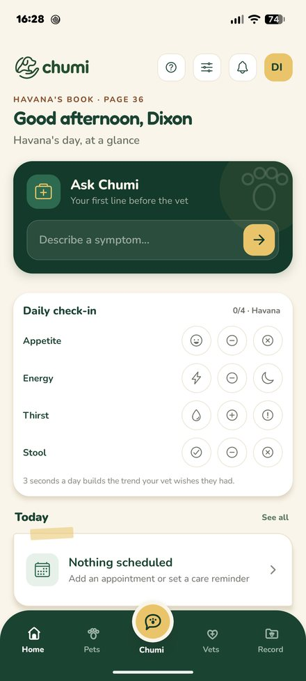
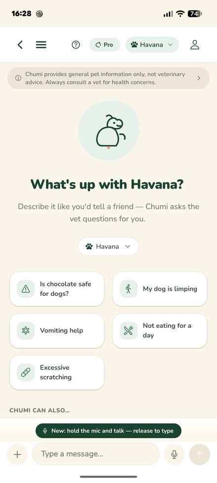
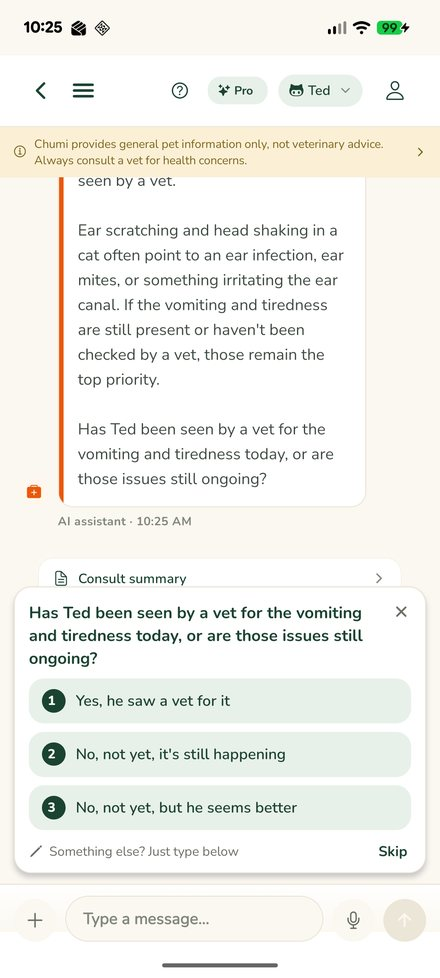

Dixon Choi
I own the digital programme in Gategroup's two-person European procurement PMO: roadmap, architecture and delivery for around 80 people across seven countries. I take each build the whole way myself — scope, requirements, architecture, build, UAT, rollout, then run it in production. That means spend data, workflow automation, and LLM agents on MCP servers wired into the systems those teams already use, with a person signing off anything that leaves. Alongside the day job I run DDX Consulting: I design the automations and then operate them.
The architecture I run
Source systems on the left, the automation layer I own in the middle, the decision on the right. I set what connects to what; nothing reaches the outside world without a person approving it.
Tools I ship with
AI & automation
- Claude / Anthropic API
- MCP servers
- Claude Agent SDK
- n8n
- Power Automate
Data & BI
- Power BI
- Power Query (M)
- DAX
- SQL
- Python · pandas
- GIS / shapefiles
Procurement & systems
- SAP
- Dynamics 365
- SharePoint
- Power Platform
- Source-to-Pay / P2P
- Spend analytics
- Supplier relationship management
- KPI frameworks
Build
- TypeScript
- Next.js
- React
- Postgres
- React Native · Expo
- Git
Experience
-
Apr 2025 —
PresentPMO Europe Procurement Analyst
Gategroup, London, UK · digital programme owner- Own the digital programme in a two-person European procurement PMO: roadmap, architecture and delivery for process, data, automation and AI across seven countries, serving around 80 people. I decide what gets built, in what order, and how it lands with the country teams.
- Run the whole cycle on every build with no vendor and no internal dev team in between: scope it with the country teams, write the requirements and the process design, architect it, build it, run UAT, roll it out and train the users, then own it in production and keep changing it.
- Stood up in-house LLM agents for contract review, supplier discovery and negotiation support, on MCP servers I built against live spend, contract and supplier systems. A person still approves anything that leaves the building.
- Took supplier comms, invoice and rebate collection, and budget submission off email and spreadsheets and onto Power Automate, so the operational cycle is a system the PMO runs, not a pile of local workbooks.
- Own the reporting and SRM the region uses: Power BI over several ERPs (Power Query, DAX, SQL), and the SRM process and system in Power Automate, SharePoint and Power BI, including supplier scorecards. The KPI frameworks I set feed category and sourcing decisions, not just headline savings.
-
May 2025 —
PresentFounder
DDX Consulting · ddx-consulting.com · alongside GategroupI own delivery end to end: custom ERP and process design, systems integration and automation for procurement, supply chain, sales and marketing. DDX builds the stack, then I run it. Clients watch every run and sign off anything that reaches the outside world, from Tally, the workspace I built for that control loop.
Tally, the client workspace. Silent, 42 seconds; the captions carry the commentary. -
Mar 2026 —
PresentFounder
Chumi · chumi.pet · alongside Gategroup


Chumi on Android: home, the assistant, and a consultation mid-flow. -
Sep 2024 —
Dec 2024Graduate Data Analyst
Useful Projects, London, UK- Owned the carbon-analysis lifecycle: hotspotting, decarbonisation forecasts, and the Power BI and GIS the client used to act on both. Reporting to RICS and GHG standards.
- Set the metrics with engineering, energy and leadership, and shaped the analysis roadmap they signed off.
-
Dec 2023 —
Jan 2024Data Analyst
Southeast London Community Energy, London, UK- Advised the energy-poverty team on where to put the service. Open data in Python and Excel; utilisation up 10%.
- Mapped poverty and poor energy-performance hotspots onto government GIS shapefiles (Python, Tableau), then presented a revised priority strategy to senior management.
-
Feb 2023 —
May 2023Data Analyst Trainee
Generation, London, UK- Built multi-source pipelines (Python scraping, SQL and Excel, Power BI) and wrote the training materials teammates actually used, often past the course framework.
-
Nov 2021 —
Aug 2022Business Analyst (Placement)
Skywise Engineering, Hong Kong- Led the move from paper to an engineering project-management system: requirements, impact, prototype, build, UAT and integration.
- Ran the Jira tracking the team used for KPIs, deadlines and milestones (timelines down 5%), and the change management around it: surveys, training, feedback. Client satisfaction up 10%.
Education
-
Oct 2019 —
Jun 2023BSc Computer Science with Artificial Intelligence
University of Leeds, UK
Need the process owned, not just a dashboard?
Procurement, supply chain, or anything where the data is scattered and the workflow is still manual. Manager-level ownership, with the stack to match. Email is the fastest way to reach me.